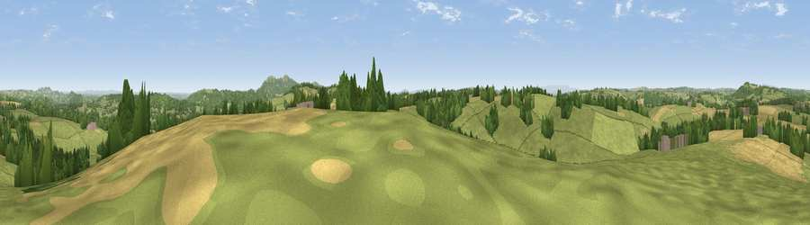

Viewpoint near Suckley
#11633 in England · top 28% of its area beats it · near SuckleyThe view, rendered

A 360° render of this exact spot computed from the terrain model, tree cover and land cover — summer colours, afternoon light, calibrated against photographs of famous viewpoints. Real trees, hedges and buildings will differ in detail.
The panorama
Grey silhouette: terrain skyline in each direction (720 bearings, Earth curvature and refraction included). Dashed green: skyline with trees (+15 m) and buildings (+8 m) as obstacles. Blue strip: how far the ground is visible on each bearing.
Where the view opens
Wedge length = distance to the farthest visible ground on that bearing (vegetation-aware). Rings at 10, 25 and 50 km.
What fills the view
59% grassland · 21% woodland · 19% cropland ·
Angular shares of the visible panorama (visual magnitude), not map area. Landscape diversity 0.43 (0–1 Shannon).
Key numbers
More beautiful places nearby
The staircase of upgrades: each row has a higher view potential than everything closer. Driving times are estimates from straight-line distance, calibrated against real road routing — check an actual route before setting out.
| Place | Direction | Drive | Score |
|---|---|---|---|
| Viewpoint near Longley Green | SE · 2 km | ~6 min | 69.3 |
| Viewpoint near Bromyard | NNW · 5 km | ~11 min | 72.9 |
| Viewpoint near Storridge | E · 5 km | ~12 min | 73.5 |
| High Grove Hill | SE · 7 km | ~14 min | 74.2 |
| Viewpoint near West Malvern | ESE · 8 km | ~16 min | 81.4 |
| North Hill | ESE · 9 km | ~17 min | 86.8 |
| Worcestershire Beacon | SE · 9 km | ~18 min | 87.1 |
| Viewpoint near West Quantoxhead | SSW · 122 km | ~147 min | 87.9 |
52.15396, -2.44612 · source: screening · position refined by local search. Computed location — check access rights before visiting.